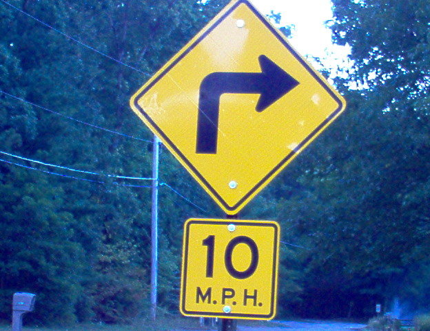
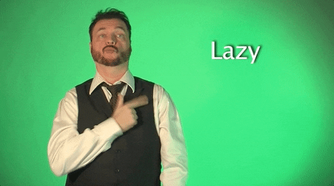
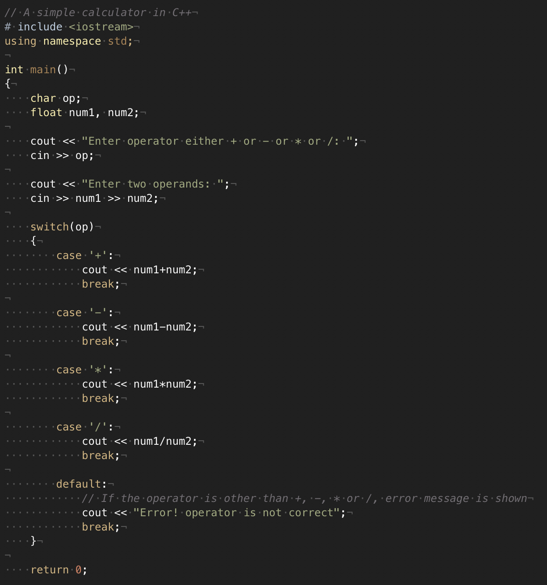

Who are you?
What is Language?
What are some characteristics of Language?
How Universal is Language?
What isn’t language?
Does our language shape our thoughts?
Language is a system for linking expression to meaning
… but we’re probably better off thinking about what makes language, language-like
1 - Arbitrary relationships between signs and the signified
2 - Fully Productive and Creative
3 - Speakers have knowledge of grammar and the ‘rules’ of language
| ### Characteristic #1 |
| ## Arbitrary relationships between signs and the signified |
The ‘sign’ is something a human does in communication
The ‘signified’ is something in the world (conceptual or concrete)
What is the link between these things?
The sign is causally linked to the signified
Smoke is a sign of fire
Bleeding from your finger is a sign of a papercut
Will’s presence is a sign of bad puns
A referential abstraction from the signified
Some hand gestures
Some sounds meant to ‘mimic’ the world

Referential only by agreement and widespread knowledge
Non-representational symbols (or uses of symbols) (♄, 🍆, 🍑)
Non-iconic gestures
Non-Arbitrary, Iconic
Arbitrary
Arbitrary
Non-Arbitrary, Iconic
Arbitrary
Non-Arbitrary, Iconic
(These ASL examples are from Sign with Robert on GIPHY)


Words which, when spoken, sound kind of like the things they represent
Boom
Gurgle
Woof
Snip
Whoosh
Splash
cock-a-doodle-doo (English)
kukko kiekuu (Finnish)
chicchirichà (Italian)
kuklooku (Urdu)
kukuriku (Hungarian)
Sourced from this awesome site
(So, different languages can’t even map sounds onto sounds uniformly)

This was generated by Stable Diffusion
The prompt was ‘beach san diego kitten spaceship silverware motorcycle dinosaur by Thomas Kinkade’
This is one of the weirdest natural language processing examples around!
Might take time
Might require some words to be ‘circumlocuted’ or invented
Might require incredible skill
But they’ll get the job done
Any human speaker of a language can produce a sentence that nobody has ever spoken before
“I plan to buy a half-empty barrel of Doritos as soon as my penguin gets home with the Crown Jewels.”
“I sure am glad that Michael Bay has agreed to direct a movie adaptation of my favorite childhood cartoon”
I saw Anna.
I saw Anna yesterday.
I saw Anna yesterday before I refilled the hummingbird feeder.
I saw Anna yesterday afternoon right after writing a bad pun but before I refilled the hummingbird feeder.
I saw my neighbor Anna who likes to hug polar bears yesterday afternoon right after writing a bad pun but before I refilled the hummingbird feeder.
Sentences can be made to contain elements from other sentences infinitely
“My cat saw the guy who went with Kati, Vincent, and Victoria to the park where the New York Knicks talked to Mary…”
This can go on literally forever

We have yet to discover a language which is communicatively ‘primitive’ or unable to describe reality
If a language lacks elements, they will be developed or borrowed over time
Languages can differ substantially still
A given language may lack words for some concepts
… or may have words that other languages don’t have
Many words and concepts are culturally based, and may not be shared regardless
Every natural human language that we’ve found is able to express a rich set of meanings
Some things sound ‘like English’ and are comprehensible
Some things are not English
These are also known as ‘language intuitions’ or ‘linguistic intuitions’
‘John went to the park with Tamara’
‘Walk Rick gate Johnny between’
‘The moose fiendishly decalcified the hieroglyphics between the Dagestani Giraffes’
‘Somebody set up us the bomb. All your base are belong to us.’
‘Gleeble’ - A small fish
‘To Garflabble’ - To perform an elaborate mating display
‘Flundubble’ - A large octopus-like creature
| ‘Gleeble’ - A small fish |
|---|
| ‘Gleeble’ - A small fish |
| ‘To Garflabble’ - To perform an elaborate mating display |
| ‘Flundubble’ - A large octopus-like creature |
| ### Is the sentence ‘Gleebles garflabble for flundubbles all the time.’ grammatical? |
| A) Yes |
| B) No |

… but not so much for other kinds of basic communicative gestures
So, this is yet another element of Language
Language is symmetrical (e.g. we can send and recieve)
Language can talk about situations not in the ‘here and now’
Language is made of discrete, isolateable units (like words or sounds)
Language has slang, taboo words
Language accomplishes certain functions (e.g. asking questions, issuing commands)
All languages can be translated into any other
But the three we’ll focus on are…
| ### Three important characteristics of Language |
| - 1 - Arbitrary relationships between signs and the signified |
| - 2 - Fully Productive and Creative |
| - 3 - Speakers have knowledge of grammar and the ‘rules’ of language |
| - All human languages share these properties! |
… and we’re yet to find a group of humans without language
Some theorists have argued that this is evidence for…
An idea initially posited by Noam Chomsky
UG holds that there’s some genetic basis to human language
Some properties of human language are innate
There are a set of constraints governing language that are ‘built in’ to our physiology
A child of two Mandarin Chinese speakers, raised by English speakers, will speak English
Every language is not the same, and linguistic grammar varies substantially
UG is about biological predisposition to Language, not to A language
No cultures, people, or societies have been found with no language
No other species has been found with human-like language
Children acquire language impressively well
Signed languages show similar properties to spoken languages
Some things appear to be universal
There doesn’t seem to be good biological evidence for it
Many properties of human language can be derived from functional facts about communication
Recursion might not be universal
The predominant view among professional linguists for a long time was aligned with Chomsky in being a nativist approach, meaning that most people in the field assumed that our biological capacity for language is very specifically linguistic
Your textbook takes a clear opposition to the nativist approach
I just want you to know the idea behind UG
Semaphore and Morse Code
Writing systems
|  |
1 - Arbitrary relationships between signs and the signified
2 - Fully Productive and Creative
3 - Speakers have knowledge of grammar and the ‘rules’ of language
2 - Fully Productive and Creative
3 - Speakers have knowledge of grammar and the ‘rules’ of language
| ### Are programming languages languages? |
| 3 - Speakers have knowledge of grammar and the ‘rules’ of language |
So, no.

https://www.youtube.com/shorts/JCa3JLAu5-s
A - Curiosity
B - Happiness
C - Disgust
D - Sadness
A - Curiosity
B - Happiness
D - Sadness
| ### Is 'body language' language? |
| 2 - Fully Productive and Creative |
| 3 - Speakers have knowledge of grammar and the ‘rules’ of language |
| ### Is 'body language' language? |
| 3 - Speakers have knowledge of grammar and the ‘rules’ of language |
| ### Is 'body language' language? |
| 3 - Speakers have knowledge of grammar and the ‘rules’ of language |
Large Transformer-based Neural language models (like ChatGPT or OpenAssistant) are now capable of producing robust, grammatical, and used-as-humans-would language
They have ‘passed the bar’ for many linguists as competent language users
They are much less efficient language learners than children
The code doesn’t include grammatical facts, a ‘language organ’, or innate grammatical patterns
English models have accidentally learned some other languages
… and it’s a very large matrix of numbers.
Mating calls
Alert calls
Territorial displays
A chimpanzee raised in a human family to learn ASL by Herbert Terrace
Learned 125 signs (maybe fewer)
Combined signs to produce 2-4 word utterances
Never got past 2-4 sign utterances
Only 7% of utterances served to advance the conversation
39% of utterances were repetitions of what had just been signed
Entirely ‘pragmatic’ use of language
Terrace argued that Nim never learned anything
There were some methodological… oddities
Became rather strong and violent, as male chimps do.
Later given back to a research facility and used for medical research
Still used signs (e.g. ‘play’, hug’) from time to time
Died at an animal rescue ranch of a heart attack
Featured in the (sad) documentary Project Nim
https://www.youtube.com/watch?v=bFDGPgXtK-U
According to Prat et al. 2016, bat vocalizations have detectable information about…
The speaker
Behavior context (e.g. feeding, mating, perching, sleep)
The desired listener
Dr. Con Slobodchikoff argues that prairie dogs have…
Different calls for different species of predators
Calls containing descriptive information about location, size, shape, color of predators
Prairie dogs will alarm differently on the basis of your shirt
Some signs of new calls for shapes
We’ve only seen one domain of ‘language’
There’s no sign of non-pragmatic language use
So, we’d need more data to call this ‘Language’
We’ve just discovered that whales produce vowels as a part of their clicks
This points us towards new approaches of understanding whale language!
Nobody’s truly doing human language yet
There’s evidence of complex information being encoded
… but we’re still gonna need more evidence before it’s ‘Language’
We know it’s a universal thing, although with variation
And we know that animals don’t seem to do it (yet?)
Now, for the (potentially) scarier side of Language
We use linguistic concepts in categorizing the world
We discuss the world using our most available set of terms
We lack terms for some more abstract feelings
So, language is a part of our thinking process
This leads many to ask…
Also known as ‘Linguistic Relativity’
‘The language you speak influences how you think about the world’
This is fascinating and terrifying
No effect: ‘The language we speak has zero effect on our thought or cognition’
Weak: ‘The language we speak has some effect on our thought and cognition’
Strong: ‘The language we speak guides our thought and cognition’
Determinism: ‘The language we speak determines our thought and cognition’
It’s clear that there’s some effect
But it’s also clear that it’s not deterministic
The debate is now focused on the size and nature of the effect
Watch Dr. Boroditsky’s TED Talk